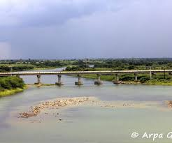
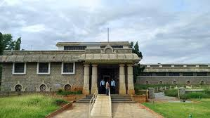

A scenic spot ideal for picnics and birdwatching, Pocharam Dam is a popular destination for nature lovers. The dam is surrounded by a wildlife sanctuary, offering a complete experience of nature.
Cost to Stay: ₹1,216/night
Manjeera Reservoir
A peaceful spot known for its boating and birdwatching activities, Manjeera Reservoir is surrounded by greenery and is an excellent place for a weekend retreat.
Cost to Stay: ₹1,260/night

Singur Dam
Singur Dam is another beautiful dam in the Sangareddy district, offering scenic views and opportunities for fishing and boating. The area is ideal for a relaxing day out with family.
Cost to Stay: ₹1,200/night

Kondapur Archaeological Museum
This museum is an archaeological treasure trove, housing artifacts and relics from the Satavahana period. It’s a great place for history enthusiasts to explore the rich heritage of the region.